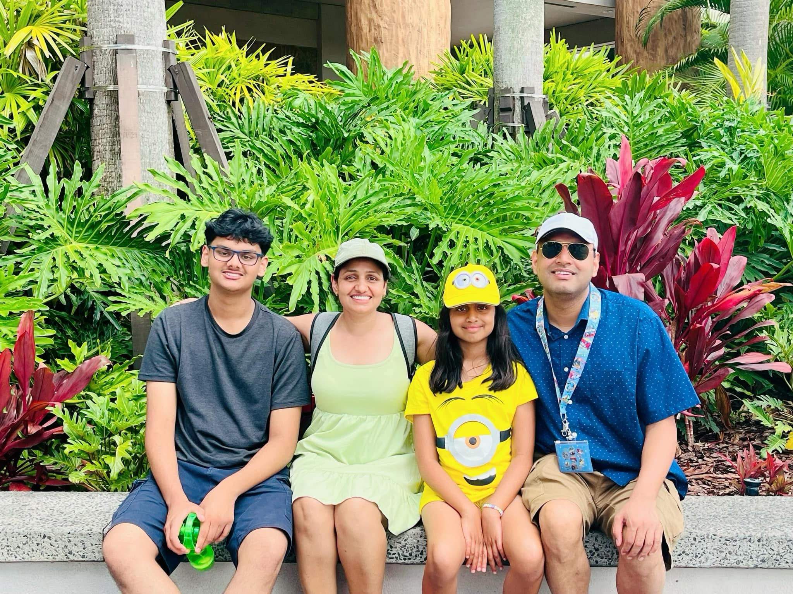

I have a wonderful family of four people. It includes my mom, my dad, my sister, and me. We enjoy spending time together and always support each other. My mom is caring and always makes sure everyone is happy. My dad works hard and teaches us important life lessons. My sister and I get along well, and we often have fun playing games or watching movies together. I feel lucky to be part of such a loving family.
In my free time, I enjoy several activities that keep me busy and happy. My main hobbies include:
My absolute favorite food is probably a nice chicken biryani
After high school, I plan to attend university to study Political Science. I've been fascinated by politics my whole life and my dad and I often discuss politics and news almost daily
Then I plan on going to law school and becoming a lawyer, I find it a field that interests me a lot and I'm even a member of our schools competitive mock trial team